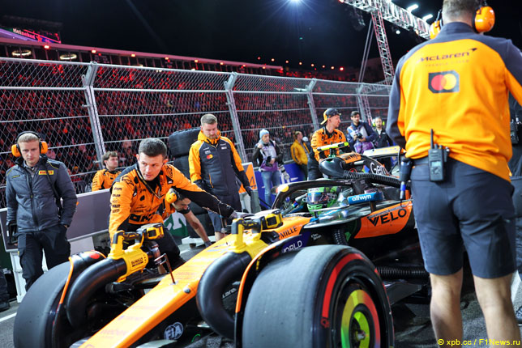
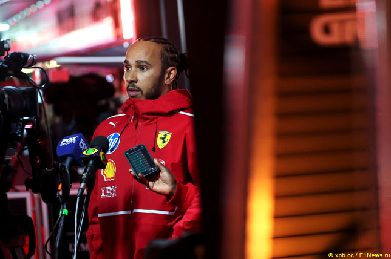
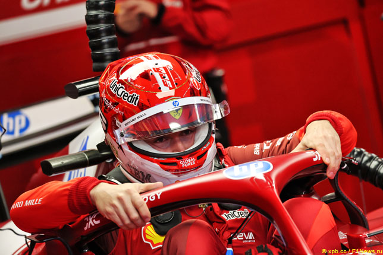
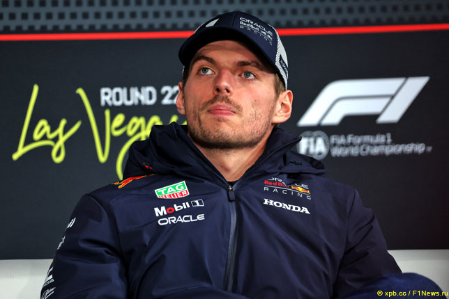
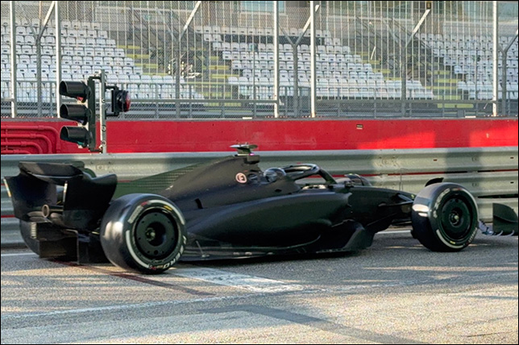

Ландо Норрис и Оскар Пиастри дисквалифицированы

Стюарды Гран При Лас-Вегаса дисквалифицировали гонщиков McLaren Ландо Норриса и Оскара Пиастри за несоответствие машин требованиям технического регламента.
Техническая инспекция после финиша выявила, что толщина контрольной планки под днищем машин гонщиков McLaren оказалась меньше разрешённых 9 мм.
Измерения планки на машине Пиастри показали, что толщина спереди слева составила 8,96 мм, спереди справа – 8,74 мм, сзади справа – 8,90 мм. Аналогичные измерения показали толщину планки и на машине Норриса – 8,88 мм спереди справа и 8,93 мм сзади справа. Погрешность измерительного прибора составляет 0,001 мм.
Льюис Хэмилтон: Хуже уже быть не может

Льюис Хэмилтон показал двадцатое время в квалификации Гран При Лас-Вегаса – впервые за 19-летнюю карьеру в Формуле 1 семикратный чемпион мира оказался последним в квалификации по чистому темпу. Для Ferrari это первый случай с Гран При Абу-Даби 2009 года, когда её гонщик показал последнее время в квалификации.
«У меня просто нет слов для всего этого, – прокомментировал итоги квалификации Льюис Хэмилтон. – Очевидно, что результат недостаточный. Я не смог прогреть шины, и из-за этого возникла сильная недостаточная поворачиваемость. Один из моих передних тормозных дисков был словно покрыт льдом, поэтому мне было очень трудно замедлять машину в поворотах.
Конечно, всё это раздражает, поскольку в третьей тренировке машина отлично управлялась, и я думал, что меня ждёт отличный день, который превратился в худший. Хуже уже быть не может».
Шарль Леклер избежал штрафных санкций

На последних минутах второй сессии свободных заездов Гран При Лас-Вегаса Шарль Леклер остановился за пределами трассы из-за проблем с коробкой передач.
После сессии стало известно, что действия гонщика Ferrari расследуют стюарды, поскольку он предположительно нарушил параграф 26.5 Спортивного регламента, в котором говорится, что покидая машину, гонщик должен установить на место руль и выключить ERS.
Поговорив с гонщиком и изучив все обстоятельства инцидента, стюарды пришли к выводу, что со стороны Шарля Леклера не было допущено нарушений, и к нему не стали применять штрафные санкции.
Макс Ферстаппен готов сменить гоночный номер в 2026-м

Четвёртый год Макс Ферстапен выступает с чемпионской единичкой на машине, но если в этом сезоне ему не удастся отстоять титул, то в 2026-м Максу придётся вернуться к своему номеру 33. Однако Комиссия Формулы 1 разрешила гонщикам менять номера по ходу карьеры, и в Лас-Вегасе у Макса Ферстаппена спросили, под каким номером он будет выступать в следующем сезоне.
«Это очень хороший вопрос! – ответил гонщик Red Bull Racing. – Я подумаю над этим зимой, но мой любимый номер 3. Теперь нужно понять, смогу ли я его использовать.
В Cadillac начали тесты в Имоле

Команда Cadillac F1 начала сегодня двухдневные тесты в Имоле с использованием арендованной у Ferrari машины SF-23 в нейтральной раскраске. За руль сел Серхио Перес.
Цель тестов – не время на круге и технические решения для следующего сезона. На этой неделе команда хочет наладить работу инженеров и механиков на трассе, чтобы каждый сотрудник точно знал круг своих обязанностей и тех, с кем ему предстоит взаимодействовать в боксах во время тестов и гонок.
Команда планирует отработать все процедуры, связанные с обслуживанием машины, выполнив имитацию гоночного уик-энда.